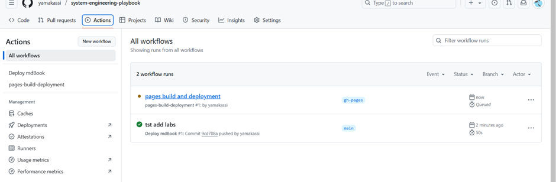

6.1. Инфраструктура и деплой
1. Инфраструктурные компоненты
Обзор архитектуры

| Компонент | Технология | Роль | Масштабирование |
|---|---|---|---|
| API Gateway | Spring Cloud Gateway | Маршрутизация, JWT auth | Horizontal (3+ replicas) |
| ML Inference | TensorFlow Serving 2.10 | GPU inference | Auto-scaling (GPU) |
| Database | PostgreSQL 14 | Метаданные, ACID | Master-Slave replication |
| Cache | Redis 7.0 | Результаты, сессии | Redis Sentinel (HA) |
| Message Broker | RabbitMQ 3.9 | Асинхронная обработка | Cluster (3 nodes) |
| Logging | ELK Stack | Мониторинг, аудит | Elastic cluster |
| Orchestration | Kubernetes 1.27 | Контейнеризация | Multi-node cluster |
2. Процесс деплоя
CI/CD Pipeline (GitLab CI)
graph LR
Start([📝 Git Push])
Build[🔨 Build<br/>Maven/Gradle]
UnitTest[🧪 Unit Tests<br/>JUnit/Pytest]
IntegTest[🔗 Integration<br/>Tests]
DockerBuild[🐳 Docker Build<br/>Multi-stage]
Registry[📦 Push to<br/>Registry]
Decision{🌍 Environment?}
Staging[🔧 Deploy<br/>Staging]
Approval[✋ Manual<br/>Approval]
Production[🚀 Deploy<br/>Production]
Smoke[💨 Smoke<br/>Tests]
Monitor[📊 Monitoring<br/>Prometheus]
Start --> Build
Build --> UnitTest
UnitTest --> IntegTest
IntegTest --> DockerBuild
DockerBuild --> Registry
Registry --> Decision
Decision -->|Staging| Staging
Decision -->|Production| Approval
Approval --> Production
Staging --> Monitor
Production --> Smoke
Smoke --> Monitor
style Start fill:#67c23a,stroke:#4a9428,stroke-width:2px
style Build fill:#4a90e2,stroke:#2e5c8a,stroke-width:2px,color:#fff
style UnitTest fill:#9966ff,stroke:#7744cc,stroke-width:2px,color:#fff
style IntegTest fill:#9966ff,stroke:#7744cc,stroke-width:2px,color:#fff
style DockerBuild fill:#2496ed,stroke:#1a6db8,stroke-width:2px,color:#fff
style Registry fill:#2496ed,stroke:#1a6db8,stroke-width:2px,color:#fff
style Decision fill:#e6a23c,stroke:#b8821e,stroke-width:2px
style Staging fill:#67c23a,stroke:#4a9428,stroke-width:2px
style Production fill:#f56c6c,stroke:#c94545,stroke-width:2px,color:#fff
style Approval fill:#ff9900,stroke:#cc7700,stroke-width:2px
style Monitor fill:#e6522c,stroke:#b84123,stroke-width:2px,color:#fff
Этапы деплоя
1. Сборка образов
# .gitlab-ci.yml
build:
stage: build
script:
- docker build -t api-gateway:$CI_COMMIT_SHA .
- docker build -t ml-service:$CI_COMMIT_SHA ./ml-service
- docker build -t data-upload:$CI_COMMIT_SHA ./data-upload
artifacts:
paths:
- build/
2. Тестирование
test:
stage: test
script:
# Unit tests
- mvn test
- pytest tests/
# Integration tests
- docker-compose -f docker-compose.test.yml up -d
- newman run postman_collection.json
# Load tests
- jmeter -n -t load-test.jmx -l results.jtl
3. Разворачивание в Kubernetes
deploy:
stage: deploy
script:
- kubectl apply -f k8s/namespace.yaml
- kubectl apply -f k8s/configmap.yaml
- kubectl apply -f k8s/secrets.yaml
- helm upgrade --install medical-platform ./charts/medical-platform
only:
- main
3. Kubernetes Configuration
API Gateway Deployment
apiVersion: apps/v1
kind: Deployment
metadata:
name: api-gateway
namespace: medical-platform
spec:
replicas: 3
selector:
matchLabels:
app: api-gateway
template:
metadata:
labels:
app: api-gateway
spec:
containers:
- name: api-gateway
image: registry.med-diagnosis.com/api-gateway:latest
ports:
- containerPort: 8080
env:
- name: SPRING_PROFILES_ACTIVE
value: "production"
- name: JWT_SECRET
valueFrom:
secretKeyRef:
name: jwt-secret
key: secret
resources:
requests:
memory: "512Mi"
cpu: "500m"
limits:
memory: "2Gi"
cpu: "2000m"
livenessProbe:
httpGet:
path: /actuator/health
port: 8080
initialDelaySeconds: 30
periodSeconds: 10
readinessProbe:
httpGet:
path: /actuator/health/readiness
port: 8080
initialDelaySeconds: 10
periodSeconds: 5
ML Inference Service (GPU)
apiVersion: apps/v1
kind: Deployment
metadata:
name: ml-inference
namespace: medical-platform
spec:
replicas: 2
selector:
matchLabels:
app: ml-inference
template:
metadata:
labels:
app: ml-inference
spec:
containers:
- name: tensorflow-serving
image: tensorflow/serving:2.10.0-gpu
ports:
- containerPort: 8500 # gRPC
- containerPort: 8501 # REST
env:
- name: MODEL_NAME
value: "resnet50_chest_xray"
- name: MODEL_BASE_PATH
value: "/models"
volumeMounts:
- name: models
mountPath: /models
resources:
limits:
nvidia.com/gpu: 1 # Request 1 GPU
volumes:
- name: models
persistentVolumeClaim:
claimName: ml-models-pvc
nodeSelector:
cloud.google.com/gke-accelerator: nvidia-tesla-t4
HorizontalPodAutoscaler
apiVersion: autoscaling/v2
kind: HorizontalPodAutoscaler
metadata:
name: api-gateway-hpa
namespace: medical-platform
spec:
scaleTargetRef:
apiVersion: apps/v1
kind: Deployment
name: api-gateway
minReplicas: 3
maxReplicas: 10
metrics:
- type: Resource
resource:
name: cpu
target:
type: Utilization
averageUtilization: 70
- type: Resource
resource:
name: memory
target:
type: Utilization
averageUtilization: 80
KEDA для RabbitMQ
apiVersion: keda.sh/v1alpha1
kind: ScaledObject
metadata:
name: ml-inference-scaler
namespace: medical-platform
spec:
scaleTargetRef:
name: ml-inference
minReplicaCount: 1
maxReplicaCount: 5
triggers:
- type: rabbitmq
metadata:
queueName: medical_data
queueLength: "10" # Scale if queue > 10 messages
host: "amqp://rabbitmq:5672"
4. Мониторинг
Prometheus
apiVersion: v1
kind: ConfigMap
metadata:
name: prometheus-config
data:
prometheus.yml: |
global:
scrape_interval: 15s
scrape_configs:
# API Gateway
- job_name: 'api-gateway'
kubernetes_sd_configs:
- role: pod
relabel_configs:
- source_labels: [__meta_kubernetes_pod_label_app]
action: keep
regex: api-gateway
# ML Inference
- job_name: 'ml-inference'
static_configs:
- targets: ['ml-inference:8501']
# PostgreSQL
- job_name: 'postgresql'
static_configs:
- targets: ['postgres-exporter:9187']
# RabbitMQ
- job_name: 'rabbitmq'
static_configs:
- targets: ['rabbitmq-exporter:9419']
# GPU Metrics
- job_name: 'dcgm'
static_configs:
- targets: ['dcgm-exporter:9400']
Grafana дашборды
System Overview Dashboard
-
API Performance:
- Request rate (req/sec)
- Response time (p50, p95, p99)
- Error rate (4xx, 5xx)
-
ML Performance:
- Inference time
- GPU utilization
- Batch size
- Throughput (images/sec)
-
Infrastructure:
- CPU usage по pod’ам
- Memory usage
- Network I/O
- Disk I/O
Database Dashboard
- Connection pool size
- Query time (p95, p99)
- Replication lag
- Transaction rate
Message Queue Dashboard
- Queue size (ready, unacked)
- Publish rate
- Consume rate
- DLQ size
5. Безопасность
Network Policies
apiVersion: networking.k8s.io/v1
kind: NetworkPolicy
metadata:
name: api-gateway-policy
spec:
podSelector:
matchLabels:
app: api-gateway
policyTypes:
- Ingress
- Egress
ingress:
- from:
- podSelector:
matchLabels:
app: ingress-nginx
ports:
- protocol: TCP
port: 8080
egress:
- to:
- podSelector:
matchLabels:
app: data-upload
- podSelector:
matchLabels:
app: auth-service
ports:
- protocol: TCP
port: 8080
Secrets Management
apiVersion: v1
kind: Secret
metadata:
name: database-credentials
type: Opaque
stringData:
username: medical_user
password: ${DB_PASSWORD} # From external secret manager
---
apiVersion: v1
kind: Secret
metadata:
name: jwt-secret
type: Opaque
stringData:
secret: ${JWT_SECRET_KEY}
publicKey: ${JWT_PUBLIC_KEY}
TLS/SSL
apiVersion: cert-manager.io/v1
kind: Certificate
metadata:
name: api-tls-cert
spec:
secretName: api-tls-secret
issuerRef:
name: letsencrypt-prod
kind: ClusterIssuer
dnsNames:
- api.med-diagnosis.com
- "*.api.med-diagnosis.com"
6. Backup & Disaster Recovery
PostgreSQL Backup
#!/bin/bash
# Daily backup script
DATE=$(date +%Y%m%d)
BACKUP_DIR="/backups/postgres"
# Full backup
pg_dump -U postgres medical_db | gzip > "$BACKUP_DIR/medical_db_$DATE.sql.gz"
# Upload to S3
aws s3 cp "$BACKUP_DIR/medical_db_$DATE.sql.gz" s3://medical-backups/postgres/
# Retention: Keep last 30 days
find "$BACKUP_DIR" -name "*.sql.gz" -mtime +30 -delete
Redis Backup
# RDB snapshot (configured in redis.conf)
save 900 1 # After 900 sec (15 min) if at least 1 key changed
save 300 10 # After 300 sec (5 min) if at least 10 keys changed
save 60 10000 # After 60 sec if at least 10000 keys changed
# AOF persistence
appendonly yes
appendfsync everysec
Disaster Recovery Plan
| Сценарий | RTO | RPO | Процедура |
|---|---|---|---|
| Single pod failure | < 1 мин | 0 | Kubernetes auto-restart |
| Node failure | < 5 мин | 0 | Pod rescheduling |
| Zone failure | < 15 мин | < 1 мин | Multi-zone cluster |
| Database failure | < 30 мин | < 5 мин | Failover to replica |
| Region failure | < 2 часа | < 1 час | Restore from backup |
7. Cost Optimization
Resource Allocation
| Service | CPU Request | CPU Limit | Memory Request | Memory Limit | Estimated Cost/month |
|---|---|---|---|---|---|
| API Gateway (×3) | 500m | 2000m | 512Mi | 2Gi | $150 |
| ML Inference (×2 GPU) | 2000m | 4000m | 8Gi | 16Gi | $800 |
| PostgreSQL | 1000m | 2000m | 4Gi | 8Gi | $200 |
| Redis | 500m | 1000m | 2Gi | 4Gi | $100 |
| RabbitMQ (×3) | 500m | 1000m | 1Gi | 2Gi | $150 |
| Total | ~$1,400/month |
Optimization Strategies
-
Spot Instances для ML:
- Use preemptible VMs для non-critical ML inference
- Экономия: 60-80%
-
Auto-scaling:
- Scale down ночью (low traffic)
- Экономия: 30%
-
Reserved Instances:
- PostgreSQL, Redis на reserved instances
- Экономия: 40%
-
Object Storage:
- S3 Intelligent-Tiering для медицинских изображений
- Экономия: 50% на storage
Источники
- «Kubernetes in Action» Marko Luksa
- Google Cloud Platform Best Practices
- TensorFlow Serving на Kubernetes
- KEDA Documentation
- Prometheus Operator